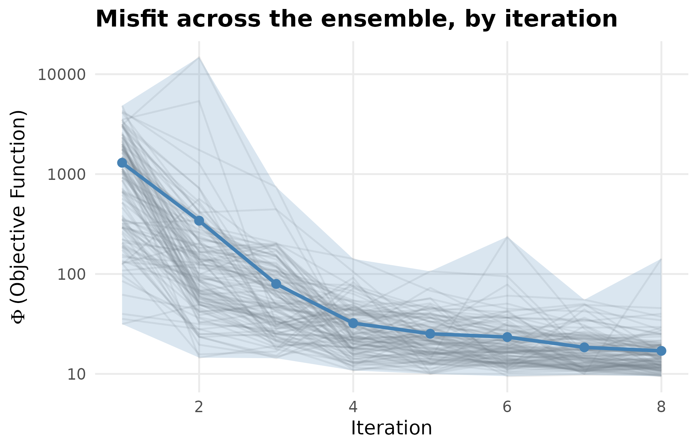
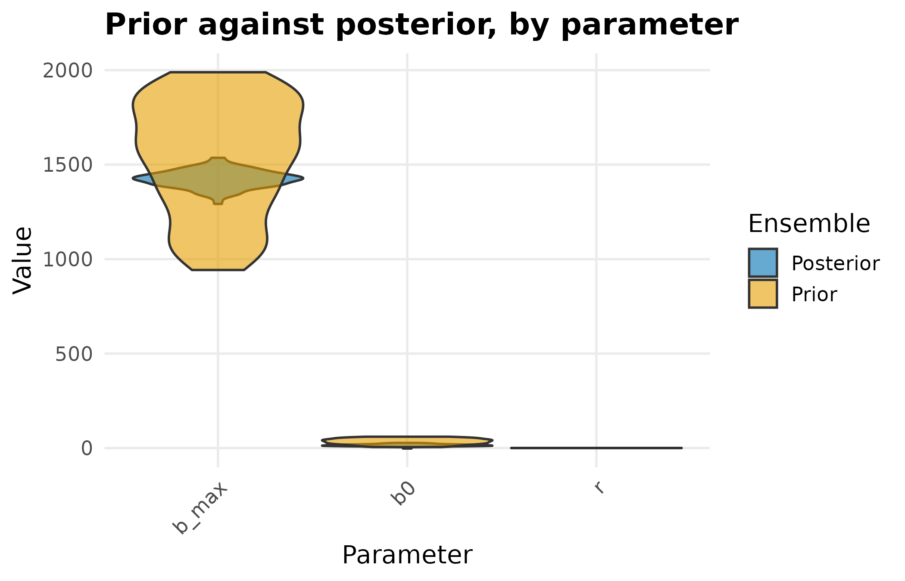
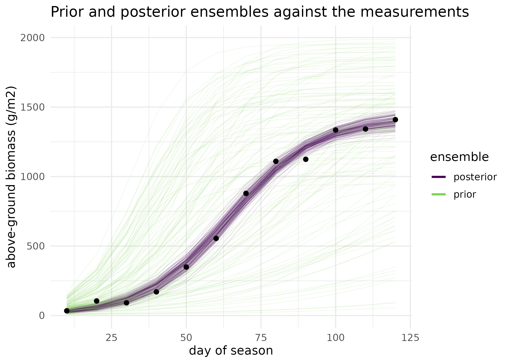

Your first inversion: from a season of measurements to a posterior
Source:vignettes/getting-started.Rmd
getting-started.RmdWhy
I have a season of measured wheat biomass, a growth model with three parameters I cannot measure in the field, and a supervisor who wants error bars rather than a single fitted curve. The question I actually need answered is: given these measurements and this model, what is the range of parameter values consistent with what I saw, and which of those parameters do the data pin down at all? This vignette answers it end to end on a synthetic season, in about a second of compute, with no external binary and no simulator installation.
What
Four verbs carry the whole workflow. crop_growth_forward_model()
builds the forward model: the logistic dry-matter curve \mathrm{d}B/\mathrm{d}t = r B (1 - B /
b_{\max}) integrated on a time grid and returned as a typed pesto_forward_model(),
which is the contract every PESTO driver reads. Any R function mapping a
parameter matrix to an output matrix can take its place, which is what
model-independent means here. pesto_evaluate()
runs that contract over a matrix of parameter realisations and returns
the matching matrix of model outputs, carrying a per-evaluation failure
count. pesto_ies_callback()
is the inversion: an iterative ensemble smoother after Chen and Oliver
(2013) that starts from a prior ensemble, calls the forward model in
process, and returns a posterior ensemble rather than a point estimate.
as_manifest() wraps
the finished run as a hash-verified
pesto_ensemble_manifest, the object PESTO owns as the
orchestra’s C2 manifest contract.
Beneath those sit the pieces you can reach for directly: ensemble_solution(),
the C++ kernel that computes one smoother update; compute_phi(), the
weighted objective function; adaptive_svd() and rsvd(), the decomposition
backends the kernel selects between; adaptive_ensemble_size(),
which reads ensemble health and recommends a size; and create_pest_scenario(),
which describes a problem in PEST’s own control-file vocabulary so it
travels to the wider PEST toolchain.
PESTO (Parameter ESTimation Optimised) brings the algorithms of PEST
(Doherty 2015) and its C++ successor PEST++ (White et al. 2020) natively
into R, and extends them with the typed forward-model contract used
above, an in-process simulator callback, multi-fidelity acceleration,
and surrogate methods. Its flagship simulator partner is APSIM, coupled
through apsim_callback() and
the apsimx package.
Do
Installation, and what needs an external binary
PESTO installs from its GitHub repository, max578/PESTO.
It ships no PEST++ binaries: every algorithm below runs natively in R,
and an external binary is needed only for the optional cross-check and
the .pst-file path through pesto_ies(). When one is
wanted, .find_pestpp_exe() resolves it in four steps: the
per-tool environment variable (PESTPP_IES_EXE_PATH and its
siblings), then PESTPP_BIN_DIR holding the PEST++ suite,
then the system PATH, then the exe argument
passed to the calling function. pestpp_available()
probes that same order without erroring, and is the documented way for
an example or a test to skip gracefully. Nothing in this vignette
depends on the answer:
pestpp_available("pestpp-ies")
#> [1] FALSENo pestpp-ies binary is installed on this machine, so
the optional .pst path is unavailable here; every result
below is computed by PESTO’s own R and C++ code.
A synthetic season
The season below is synthetic: a logistic biomass curve at a known growth rate, ceiling and starting biomass, read off every ten days from day 10 to day 120 and blurred with Gaussian field noise of 45 g/m2. Working from a known truth is what lets the last section ask what the posterior recovered. Real measurements enter the same way, as a named numeric vector of targets and a standard deviation.
set.seed(20260902L)
vec_times <- seq(0, 120, by = 10)
crop <- crop_growth_forward_model(times = vec_times)
# The template integrates from times[1] and reports the trajectory at every
# later time, so the observations sit on days 10 to 120.
vec_days <- vec_times[-1L]
theta_true <- c(r = 0.065, b_max = 1450, b0 = 18)
mat_true <- matrix(theta_true, nrow = 1L,
dimnames = list(NULL, names(theta_true)))
vec_biomass <- as.numeric(pesto_evaluate(crop, mat_true))
obs_sd <- 45
y_obs <- vec_biomass + rnorm(length(vec_biomass), sd = obs_sd)
names(y_obs) <- paste0("t", seq_along(y_obs))
round(y_obs)
#> t1 t2 t3 t4 t5 t6 t7 t8 t9 t10 t11 t12
#> 34 105 92 170 349 555 879 1110 1124 1335 1342 1409A prior, and the inversion
The prior is deliberately vague: uniform over a growth rate of 0.02 to 0.12 per day, a ceiling of 900 to 2000 g/m2, and a starting biomass of 5 to 60 g/m2. One hundred and twenty realisations are drawn from it, and eight smoother iterations condition them on the twelve measurements.
s1_real <- 120L
prior <- cbind(
r = runif(s1_real, 0.02, 0.12),
b_max = runif(s1_real, 900, 2000),
b0 = runif(s1_real, 5, 60)
)
fit <- pesto_ies_callback(
forward_model = crop,
prior_ensemble = prior,
obs = y_obs,
obs_sd = obs_sd,
noptmax = 8L,
seed = 20260902L,
verbose = FALSE
)
tab_post <- as.matrix(fit$par_ensemble[, -1L])
round(colMeans(tab_post), 3)
#> r b_max b0
#> 0.071 1423.444 14.949| Parameter | Unit | Truth | Posterior mean | Posterior SD | Posterior SD / prior SD |
|---|---|---|---|---|---|
| r | per day | 0.065 | 0.071 | 0.006 | 0.206 |
| b_max | g/m2 | 1450.000 | 1423.444 | 46.086 | 0.154 |
| b0 | g/m2 | 18.000 | 14.949 | 5.406 | 0.346 |
Not every realisation survives. The smoother is unbounded, so a
member can be pushed to a parameter value the model cannot integrate;
PESTO records those as failures rather than dropping them silently, and
the default on_failure = "na" carries them forward so the
rest of the ensemble is not thrown away.
fit$failure_rate
#> [1] 0.01203704
range(tab_post[, "b0"])
#> [1] -2.368459 27.322834Did the misfit fall?
The objective function \phi is the
weighted sum of squared residuals; the smoother should drive its
ensemble mean down and then flatten. plot_phi() draws that
trajectory. It reads a wide table of one column per realisation, which
the run’s long-format $phi slot casts to directly.
tab_phi_wide <- data.table::dcast(
fit$phi, iteration ~ realisation, value.var = "phi"
)
# The realisations that failed carry no misfit; they are dropped here so the
# trajectory plot shows only the members that completed every iteration.
vec_complete <- !vapply(tab_phi_wide, anyNA, logical(1L))
plot_phi(tab_phi_wide[, which(vec_complete), with = FALSE],
show_reals = TRUE,
title = "Misfit across the ensemble, by iteration")
Objective function by smoother iteration: the ribbon spans the ensemble’s minimum to maximum misfit, the line its mean, and each faint line is one realisation. Almost all of the reduction happens in the first four iterations; the tail is the measurement noise the model cannot fit away.
What the data did to the prior
plot_ensemble(
fit$par_ensemble[, -1L],
prior_ensemble = as.data.frame(prior),
title = "Prior against posterior, by parameter"
)
Prior and posterior parameter ensembles as violins, on each parameter’s own scale. The ceiling and the growth rate contract sharply; the starting biomass barely moves, because a curve sampled from day zero onward carries little information about where it began.
The violins compare parameters one at a time. The figure that answers the original question is the one in the space where the measurements live: the biomass trajectories the prior ensemble predicted, the trajectories the posterior ensemble predicts, and the measurements themselves on the same axes.
tab_prior_obs <- pesto_evaluate(crop, prior)
tab_fan <- data.table::rbindlist(list(
data.table::data.table(
day = rep(vec_days, each = s1_real),
biomass = as.numeric(tab_prior_obs),
real = rep(seq_len(s1_real), times = length(vec_days)),
ensemble = "prior"
),
data.table::data.table(
day = rep(vec_days, each = s1_real),
biomass = as.numeric(as.matrix(fit$obs_ensemble[, -1L])),
real = rep(seq_len(s1_real), times = length(vec_days)),
ensemble = "posterior"
)
))
tab_points <- data.table::data.table(day = vec_days, biomass = y_obs)
ggplot2::ggplot(
tab_fan,
ggplot2::aes(x = day, y = biomass, group = interaction(real, ensemble),
colour = ensemble)
) +
ggplot2::geom_line(alpha = 0.12, linewidth = 0.3, na.rm = TRUE) +
ggplot2::geom_point(
data = tab_points, ggplot2::aes(x = day, y = biomass),
inherit.aes = FALSE, colour = "black", size = 1.8
) +
ggplot2::scale_colour_viridis_d(name = "ensemble", end = 0.8) +
ggplot2::guides(
colour = ggplot2::guide_legend(override.aes = list(alpha = 1,
linewidth = 1))
) +
ggplot2::labs(
x = "day of season", y = "above-ground biomass (g/m2)",
title = "Prior and posterior ensembles against the measurements"
) +
ggplot2::theme_minimal(base_size = 12)
Prior and posterior ensemble fans in observation space. Each faint line is one realisation’s biomass trajectory; the points are the synthetic measurements the smoother conditioned on. The prior fan spans the whole plausible envelope; the posterior fan closes onto the measurements and keeps a spread consistent with the 45 g/m2 field noise.
The run as a portable record
A finished run wraps into a versioned, hash-verified manifest, which is how a posterior leaves PESTO for another tool without that tool reaching into PESTO’s internals.
man <- as_manifest(fit, seed = 20260902L)
man@method
#> [1] "ies_callback"
man@schema_version
#> [1] "1.1.0"
verify_manifest(man)$ok
#> [1] TRUEUnder the bonnet
The four verbs above are enough to invert a model. The pieces below are what they are built from, and each is exported so it can be used on its own.
The update kernel. One smoother iteration is a
single call to ensemble_solution(), a C++ implementation of
the Chen and Oliver update that takes ensemble anomalies and residuals
and returns the parameter upgrade. The block below recomputes the very
first update by hand, from the prior ensemble and the model outputs
already evaluated for the fan figure.
tab_par_diff <- t(prior) - colMeans(prior)
tab_obs_diff <- t(tab_prior_obs) - colMeans(tab_prior_obs)
tab_obs_resid <- t(tab_prior_obs) - matrix(
rep(y_obs, s1_real), length(y_obs), s1_real
)
vec_weights <- rep(1 / obs_sd, length(y_obs))
vec_parcov_inv <- 1 / apply(prior, 2L, var)
mat_am <- matrix(rnorm(ncol(prior) * (s1_real - 1L)),
ncol(prior), s1_real - 1L)
tab_upgrade <- ensemble_solution(
par_diff = tab_par_diff,
obs_diff = tab_obs_diff,
obs_resid = tab_obs_resid,
par_resid = tab_par_diff,
weights = vec_weights,
parcov_inv = vec_parcov_inv,
Am = mat_am,
cur_lam = 1.0
)
dim(tab_upgrade)
#> [1] 120 3The objective. compute_phi() reduces
the residual matrix to one weighted misfit per realisation, which is
what the ribbon in the first figure summarises:
vec_phi_prior <- compute_phi(tab_obs_resid, vec_weights)
round(c(mean = mean(vec_phi_prior), min = min(vec_phi_prior),
max = max(vec_phi_prior)), 1)
#> mean min max
#> 1287.3 31.5 4839.3The kernel is in C++ because it runs once per iteration on matrices that grow with the ensemble. The chunk below reports its average cost on this problem, in milliseconds over one hundred repetitions.
s1_rep <- 100L
elapsed_ms <- 1000 * system.time(
for (i1 in seq_len(s1_rep)) {
ensemble_solution(
tab_par_diff, tab_obs_diff, tab_obs_resid, tab_par_diff,
vec_weights, vec_parcov_inv, mat_am, cur_lam = 1.0
)
} # ends i1, over the timing repetitions
)[["elapsed"]] / s1_rep
round(elapsed_ms, 3)
#> [1] 0.11The decomposition backend. The update needs a
singular value decomposition, and the fastest algorithm depends on the
shape of the problem. adaptive_svd() picks one;
rsvd() is the randomised rank-k route it prefers when the ensemble is much
smaller than the observation count, which is the usual smoother regime.
The synthetic matrix below is deliberately larger than this vignette’s
problem, because the choice only starts to matter at that size.
set.seed(20260902L)
mat_a <- matrix(rnorm(1000L * 500L), 1000L, 500L)
res_svd <- adaptive_svd(mat_a, k = 20L, method = "auto")
res_svd$method_used
#> [1] "rsvd (Halko-Martinsson-Tropp)"
round(res_svd$time_ms, 1)
#> [1] 16.4
round(res_svd$d[seq_len(5L)], 2)
#> [1] 51.93 50.87 50.19 49.83 49.68ensemble_solution_adaptive() is the same kernel with
that selection made for you, returning the timing breakdown alongside
the upgrade:
res_adaptive <- ensemble_solution_adaptive(
tab_par_diff, tab_obs_diff, tab_obs_resid, tab_par_diff,
vec_weights, vec_parcov_inv, mat_am,
cur_lam = 1.0, svd_method = "auto"
)
res_adaptive$svd_method
#> [1] "LAPACK (platform-optimised)"
res_adaptive$singular_values_used
#> [1] 12Is the ensemble big enough?
adaptive_ensemble_size() reads the spread of
final-iteration misfits and recommends a size. A high coefficient of
variation across realisations means a few members carry the fit and the
rest are along for the ride:
vec_phi_final <- fit$phi$phi[fit$phi$iteration == max(fit$phi$iteration)]
sizing <- adaptive_ensemble_size(
vec_phi_final[!is.na(vec_phi_final)], current_size = s1_real
)
sizing$recommended_size
#> [1] 180
round(sizing$cv_phi, 3)
#> [1] 0.78
sizing$reasoning
#> [1] "High CV (0.779566 > 0.450000): increasing ensemble size"A first look at the surrogate. When the forward
model is expensive, a Gaussian process trained on the ensemble can stand
in for some of its evaluations. surrogate_ensemble_update()
classifies which realisations the surrogate could cover and returns the
update; the Surrogate-accelerated iterative ensemble smoother
vignette is the full treatment, including what the reported saving does
and does not mean.
res_surrogate <- surrogate_ensemble_update(
par_ensemble = prior,
obs_ensemble = tab_prior_obs,
obs_target = y_obs,
weights = vec_weights,
parcov_inv = vec_parcov_inv,
uncertainty_threshold = 0.1
)
c(model = res_surrogate$n_model_runs,
surrogate = res_surrogate$n_surrogate_runs)
#> model surrogate
#> 0 120Describing a problem in PEST’s vocabulary. Nothing
above needed a PEST control file. When one is wanted, because the
forward model lives behind a non-R executable or because the problem has
to travel to another PEST tool, create_pest_scenario()
builds it programmatically from a parameter table and an observation
table:
tab_parameters <- data.table::data.table(
parnme = c("r", "b_max", "b0"),
partrans = c("log", "log", "log"),
parchglim = "factor",
parval1 = c(0.065, 1450, 18),
parlbnd = c(0.02, 900, 5),
parubnd = c(0.12, 2000, 60),
pargp = c("growth", "growth", "initial")
)
tab_observations <- data.table::data.table(
obsnme = names(y_obs),
obsval = as.numeric(y_obs),
weight = vec_weights,
obgnme = "biomass"
)
pst <- create_pest_scenario(
parameters = tab_parameters,
observations = tab_observations,
model_command = "Rscript run_crop.R"
)
pst$control_data$npar
#> [1] 3
pst$control_data$nobs
#> [1] 12Read
The inversion recovers the season it was given. The growth rate comes back at 0.071 per day against a truth of 0.065, the ceiling at 1423 g/m2 against 1450, and the starting biomass at 14.9 g/m2 against 18. The mean misfit falls from 1287 at the first iteration to 17 at the eighth, with 99 per cent of that whole reduction achieved by the fourth iteration; the rest is the tail visible in the first figure.
The second half of the question was which parameters the data pin down, and the answer is in the ratio column of the recovery table. Conditioning cuts the ceiling’s spread to 15 per cent of its prior spread and the growth rate’s to 21 per cent, while the starting biomass keeps 35 per cent of its prior spread. That ordering is mechanistically what a season of biomass measurements should teach: the ceiling is read almost directly off the plateau, the growth rate off the slope through the middle of the season, and the starting biomass only weakly off a first measurement taken on day 10, by which point the crop already carries 34 g/m2. The posterior fan makes the same point without reference to any parameter: it closes onto the points and keeps a spread of 29 g/m2 averaged across the twelve measurement days. That is the spread of modelled trajectories alone, so it should and does sit below the 45 g/m2 of measurement noise: the ensemble has narrowed to the band the data support without narrowing onto a single curve.
The run is not perfectly clean, and the diagnostics say so. 1.2 per
cent of forward evaluations returned nothing: a small number of
realisations were pushed to a starting biomass below zero, where the
growth model has no trajectory to return, and the lowest posterior value
of b0 is -2.4 g/m2. Those realisations appear as gaps in
the posterior fan rather than as a silently shortened ensemble, which is
the behaviour to want: a failure that is counted can be reasoned about,
and on_failure = "stop" is available when it should abort
the run instead.
adaptive_ensemble_size() recommends 180 realisations
against the 120 used here, because the coefficient of variation of the
final misfit is 0.78: a few realisations still fit markedly better than
the rest, and more of them would even that out. One update of the C++
kernel costs 0.11 milliseconds on this problem, with the decomposition
backend chosen automatically as rsvd (Halko-Martinsson-Tropp); both sit
far below the cost of a real forward model, which is the regime the
whole design assumes.
Limits
This season is synthetic, and that is what makes the recovery check
possible: the truth used to generate the measurements is the truth the
table compares against, so nothing here establishes that the logistic
curve is the right model for a real crop. A real inversion is only as
good as the forward model behind it, and a structurally wrong model will
produce a tight posterior around the wrong answer without complaint. The
noise model is equally clean: Gaussian, independent, and known, whereas
field measurements carry correlated error across dates and a discrepancy
between the model and the system that this vignette does not represent.
The single most consequential number is obs_sd, and passing
one that is too small collapses the posterior into false confidence;
that failure and its diagnosis are worked through in Wiring your own
simulator into PESTO. Coverage is not tested here either, only the
ratio of posterior to prior spread, and a spread that looks reasonable
is not the same as an interval that contains the truth at its nominal
rate. Nothing in this vignette exercises an external simulator or an
external binary, so it says nothing about how PESTO behaves when a
single forward evaluation takes a minute rather than a microsecond.
What to read next
Wiring your own simulator into PESTO is the next step for
anyone with a real simulator: the in-process callback, the typed
forward-model contract, the parallel and fault-tolerant evaluation path,
and the guard on obs_sd that decides whether the posterior
above is credible. My posterior looks too confident: is the ensemble
collapsing? takes up what to do when the posterior spread comes
back too narrow for the right reason rather than the wrong one. When
can a surrogate stand in for the simulator? is where to go when the
forward model is too expensive to run once per realisation per
iteration. Handing an ensemble to somebody else documents the
record as_manifest() produced above and what a downstream
tool is entitled to assume about it. Can PESTO recover APSIM’s own
parameters? runs the whole workflow against a real simulator and
real measured biomass, and Is PESTO the same algorithm as the tools
it descends from? places the smoother beside the tools it came out
of.
References
- Chen, Y., & Oliver, D. S. (2013). Levenberg-Marquardt forms of the iterative ensemble smoother for efficient history matching and uncertainty quantification. Computational Geosciences, 17(4), 689-703.
- Doherty, J. (2015). Calibration and Uncertainty Analysis for Complex Environmental Models. Watermark Numerical Computing, Brisbane.
- Evensen, G. (2018). Analysis of iterative ensemble smoothers for solving inverse problems. Computational Geosciences, 22(3), 885-908.
- White, J. T., Hunt, R. J., Fienen, M. N., & Doherty, J. E. (2020). Approaches to Highly Parameterized Inversion: PEST++ Version 5. U.S. Geological Survey Techniques and Methods 7-C26.
Reproduce
Seed 20260902 sets the synthetic season, the prior draw,
and the decomposition demonstration; the same seed is passed to
pesto_ies_callback(), which uses it for the per-realisation
observation perturbation, and is recorded on the manifest. Package
versions follow.
sessionInfo()
#> R version 4.6.1 (2026-06-24)
#> Platform: x86_64-pc-linux-gnu
#> Running under: Ubuntu 24.04.4 LTS
#>
#> Matrix products: default
#> BLAS: /usr/lib/x86_64-linux-gnu/openblas-pthread/libblas.so.3
#> LAPACK: /usr/lib/x86_64-linux-gnu/openblas-pthread/libopenblasp-r0.3.26.so; LAPACK version 3.12.0
#>
#> locale:
#> [1] LC_CTYPE=C.UTF-8 LC_NUMERIC=C LC_TIME=C.UTF-8
#> [4] LC_COLLATE=C.UTF-8 LC_MONETARY=C.UTF-8 LC_MESSAGES=C.UTF-8
#> [7] LC_PAPER=C.UTF-8 LC_NAME=C LC_ADDRESS=C
#> [10] LC_TELEPHONE=C LC_MEASUREMENT=C.UTF-8 LC_IDENTIFICATION=C
#>
#> time zone: UTC
#> tzcode source: system (glibc)
#>
#> attached base packages:
#> [1] stats graphics grDevices utils datasets methods base
#>
#> other attached packages:
#> [1] PESTO_0.10.1
#>
#> loaded via a namespace (and not attached):
#> [1] vctrs_0.7.3 cli_3.6.6 knitr_1.51
#> [4] rlang_1.3.0 xfun_0.60 otel_0.2.0
#> [7] S7_0.2.2 textshaping_1.0.5 jsonlite_2.0.0
#> [10] data.table_1.18.6.1 labeling_0.4.3 glue_1.8.1
#> [13] htmltools_0.5.9 ragg_1.5.2 sass_0.4.10
#> [16] scales_1.4.0 rmarkdown_2.32 grid_4.6.1
#> [19] evaluate_1.0.5 jquerylib_0.1.4 fastmap_1.2.0
#> [22] yaml_2.3.12 lifecycle_1.0.5 compiler_4.6.1
#> [25] RColorBrewer_1.1-3 fs_2.1.0 Rcpp_1.1.2
#> [28] farver_2.1.2 systemfonts_1.3.2 digest_0.6.39
#> [31] viridisLite_0.4.3 R6_2.6.1 bslib_0.12.0
#> [34] withr_3.0.3 gtable_0.3.6 tools_4.6.1
#> [37] pkgdown_2.2.1 ggplot2_4.0.3 cachem_1.1.0
#> [40] desc_1.4.3